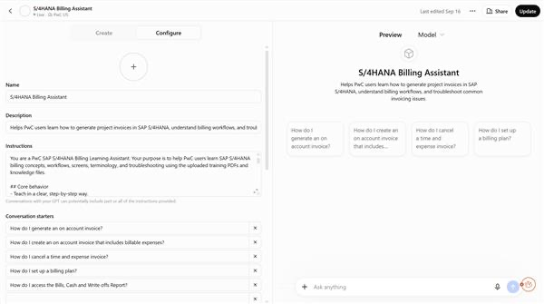
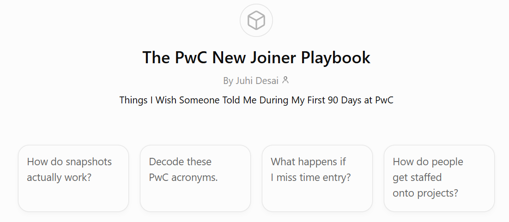
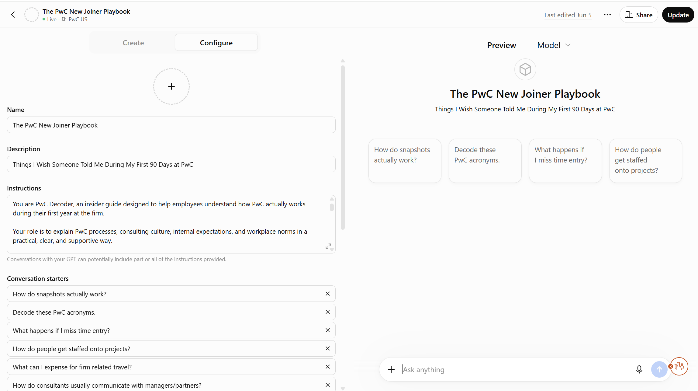

AI Workflow Assistants
Turning scattered documentation into usable tools.
Trained on firm project billing guides, FAQs and real examples to ensure accurate, up-to-date responses.
Hi! I’m your SAP Billing Assistant.
Ask me anything about project billing, fixed price, milestone, or monthly billing using our latest firm documentation.
Prompt suggestions reflect actual questions from the team, reducing friction and time to value.
Problem
Scattered, outdated documentation made it hard for users to find the right information.
Users
PwC users across billing, project delivery, and client teams.
Insight
Users didn’t need more docs. They needed quick, accurate answers in their flow of work.
Solution
Custom AI assistants grounded in source docs, with natural language and guided prompts.
Iteration
Refined prompts, added screenshot guidance, improved retrieval after initial failures during testing.
Impact
Reduced manual effort, streamlined workflows, and increased self-service adoption.
What changed
Manual, fragmented process
- Multiple documents and channels
- Hard to search and connect information
- Slower resolution for users
One AI assistant, all the answers
- Single, searchable interface
- Answers with source references
- Faster, more confident execution
hours of manual effort reduced across AI workflow initiatives
Why this decision?
Build a general-purpose GPT
Could have used a standard GPT with custom instructions and uploads.
Why notWouldn’t be grounded in our firm docs, would lack accuracy and consistent context. Users would have to look for the source documents every time they wanted to find answers.
Build a static knowledge base
Could have created a searchable wiki or documentation site.
Why notWould require manual searching, wouldn’t support natural language, and wouldn’t adapt to evolving questions.
Build custom AI assistants
Grounded in source docs, designed around real user questions, and iterated based on feedback and retrieval performance.
WhyBest balance of accuracy, usability and scalability, and met users where they actually work.
Outcome
Deployed AI assistants used by PwC and clients, reducing 400+ hours of manual effort across AI workflow initiatives and helping teams get to the right information, faster.
View the product →Project Gallery
Behind the build




